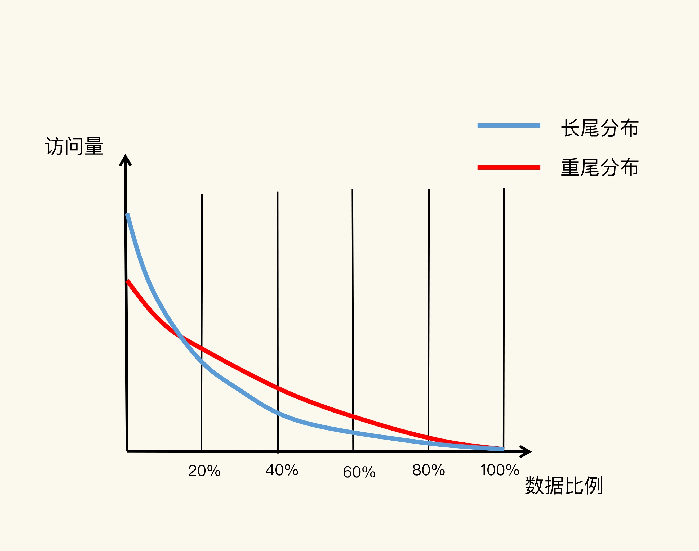
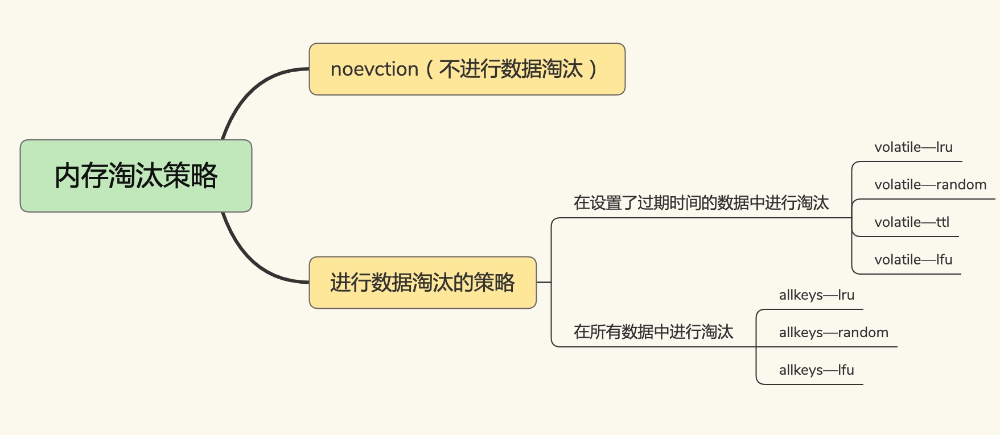

保证合适的性价比，缓存大小一定是小于后端数据库的数据总量，通过缓存数据淘汰策略，即通过根据一定策略筛选出“不重要”的数据，然后删除这些数据，为新空间腾出空间的策略
缓存大小设置

蓝线符合 二八特征，而红线 显示的重尾效应比较明显
应用数据实际访问特征和成本开销来综合考虑，大容量设置调高性能，但是成本高，而小容量则不一定能起到加速作用，一般建议设置为总数据量的15%到30%，兼顾访问性能和内存开销
CONFIG SET maxmemory 4gb
缓存写满是不可避免的，及时确定了容量也难避免缓存写满的替换操作，而缓存替换需要解决淘汰哪些数据，以及如何处理淘汰的数据
缓存策略
Redis 4.0 之前有 6种，4.0 之后又增加了2种。
- 不进行数据淘汰：noeviction
- 在设置了过期时间数据中淘汰：volatile-random,volatile-ttl,volatile-lru,volatile-lfu
- 在所有的数据范围内淘汰：allkeys-random,allkeys-lru,allkeys-lfu

无论是过期时间到了，还是内存达到了最大的maxmemory ，都会进行淘汰,被选中数据即使过期时间没到，也会被删除
设置了过期时间键
- volatile-ttl : 根据过期时间的先后进行删除，越早越先删除
- volatile-random : 随机进行删除
- volatile-lru : 使用LRU算法筛选
- volatile-lfu : 使用LFU算法筛选
所有键
- allkeys-random : 从所有的键中随机选择进行删除
- allkeys-lru : 使用LRU算法在所有的数据中进行筛选
- allkeys-lfu : 使用LFU算法在所有的数据中进行筛选
### Redis中的LRU算法
Redis 会记录每个数据最近一次被访问的时间戳。然后Redis 决定淘汰数据时第一次会随机选择出N个数据，把他作为一个集合。之后Redis会比较这N个数据中。lru字段最小的淘汰
CONFIG SET maxmemory-samples 100
策略使用意见
- 优先使用allkeys-lru ： 可以有效的使用LRU算法的优势，让冷热数据进行区分
- 如果业务中的数据访问频率相差不大，建议使用功能allkeys-random
- 如果有置顶的需求，使用volatile-lru,同时不给置顶数据设置过期时间，这样被置顶的数据一致不会被删除，而其他数据则会根据LRU进行删除
缓存淘汰数据处理

干净数据：和最初数据库中读取的值相比，没有被修改过；可以直接丢弃
脏数据：和最出数据库中的读取值相比被修改过；需要回写到数据库中